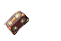
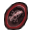
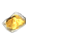

Biologické úkoly
Jak je již zvykem pro každého hráče, na serveru jsou přináší Biologické výzkumy, za které si zasloužíte odměnu ve formě trvalého bonusu.
Pro odevzdávání předmětů biologovi je vyvinut zcela nový systém. V rámci hry můžete navíc získat několik druhů Výzkumníkova elixíru a Lektvaru času.
| Výzkum | Od levelu | Předmět výzkumu | Počet | Čekací doba | Závěrečný kámen | Trvalá odměna |
|---|---|---|---|---|---|---|
| # 1 | Lv. 30 |  |
10x | 30 min. |  |
Rychlost pohybu +10% |
| # 2 | Lv. 40 | 15x | 1 hod. | Max. ZB +550 | ||
| # 3 | Lv. 50 |  | 15x | 2 hod. | Obrana +60 | |
| # 4 | Lv. 60 | 20x | 3 hod. | Hodnota útoku +50 | ||
| # 6 | Lv. 70 |  |
25x | 4 hod. | Silný proti příšerám +8% | |
| # 7 | Lv. 80 |  |
40x | 6 hod. |  | Silný proti kamenům +10% |
| # 8 | Lv. 90 | 50x | 8 hod. | Max. ZB +1500 | ||
| # 9 | Lv. 100 |  | 55x | 10 hod. | Silný proti bossům +10% | |
| # 10 | Lv. 110 | 60x | 12 hod. | Silný proti pololidem +10% |